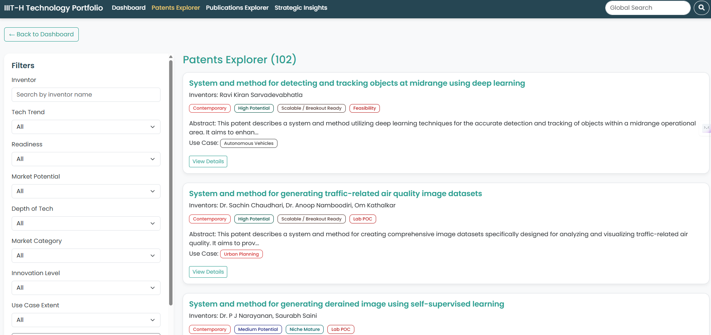

IIIT-H Technology Portfolio Platform
An interactive platform that organizes IIIT Hyderabad’s research, publications, and patents into a unified, searchable, insight-driven technology portfolio.

My Role
Product Strategy, ML Engineering, Dashboard Design
Category
Product Case Study
Duration
12 Weeks (Summer 2025)
Tools & Tech
Figma, Python, Qwen-2.5, Gemini, Grok, HTML/CSS/JS
The Problem / Objective
IIIT Hyderabad produces hundreds of high-impact research papers and patents every year. However, this information
was scattered across websites, PDFs, research center pages, and TTO documentation—making it difficult for:
• Industry partners to evaluate technologies
• Investors to identify commercialization-ready research
• Students and researchers to discover relevant work
• TTO to showcase IP for collaboration/licensing
The goal was to build a unified, interactive platform that organizes all publications and patents into a structured,
searchable, decision-ready technology portfolio.
Discovery & Research
I conducted interviews, reviewed datasets, and analyzed institutional research workflows. It became evident that the issue wasn’t a lack of research output—but the absence of a standardized, discoverable structure for presenting it.
Key Insight: The challenge wasn’t missing information—IIIT-H had 257 publications and 104 patents. The real gap was the lack of structured classification linking research → markets → readiness → application domains.
- Analyzed 257 publications and 104 patents to extract TRL, market potential, trends, and research centers.
- Reviewed TTO resources, licensing cases, and center-level research portfolios.
- Unified fragmented XLSX, PPTX, PDF, and GitHub datasets into one classification framework.
- Generated structured metadata using Grok, Gemini, and custom scripts.
Solution & Design Process
I designed a complete end-to-end platform that enables:
• Interactive dashboards for trends, TRL, and market activity
• Publication & patent explorers with multi-layer filtering
• Strategic insight heatmaps (industries, SDGs, product applications)
• Technology detail pages with structured metadata
• Global search across all research outputs
Architecture & Technical Challenges
The platform integrates structured JSON datasets with custom-built JS visualizations and search components. The front-end was designed to remain lightweight while supporting multi-dimensional filters and interactive charts.
Technical Challenge: Standardizing heterogeneous research formats was the hardest part. Publication PDFs, patent metadata, and AI-generated scores were all inconsistent. I solved this by designing a unified 4-D classification framework: Technology Trend, TRL, Market Potential, and Market Activity.
Analysis & Strategic Recommendations
The research revealed strong institutional alignment with high-growth sectors like Healthcare, Smart Cities, Robotics, and Autonomous Vehicles. Patents displayed higher commercial readiness compared to publications.
Recommendation: Build an AI-powered collaboration recommender that connects industry partners with relevant technologies based on TRL, market potential, and sector alignment. Integrate analytics (via Microsoft Clarity) to optimize user navigation.
Results & Impact
The platform consolidated IIIT-H’s research into a single, decision-ready interface.
95%+
Accuracy in structured classification
257 + 104
Publications & Patents integrated into the platform
12+
Major domains mapped to industries & SDGs
1 Platform
Unified source of truth for all stakeholders
Learnings & Next Steps
Lesson Learned: Information architecture is crucial when dealing with fragmented academic data. Building a unified classification system transformed the platform’s usability and strategic value.
Next steps include:
• Add feedback loops and heatmap-based UX optimizations
• Expand with data from 2025–2026
• Automate publications/patent ingestion using LLM extractors
• Launch an industry-facing discovery mode with personalized recommendations